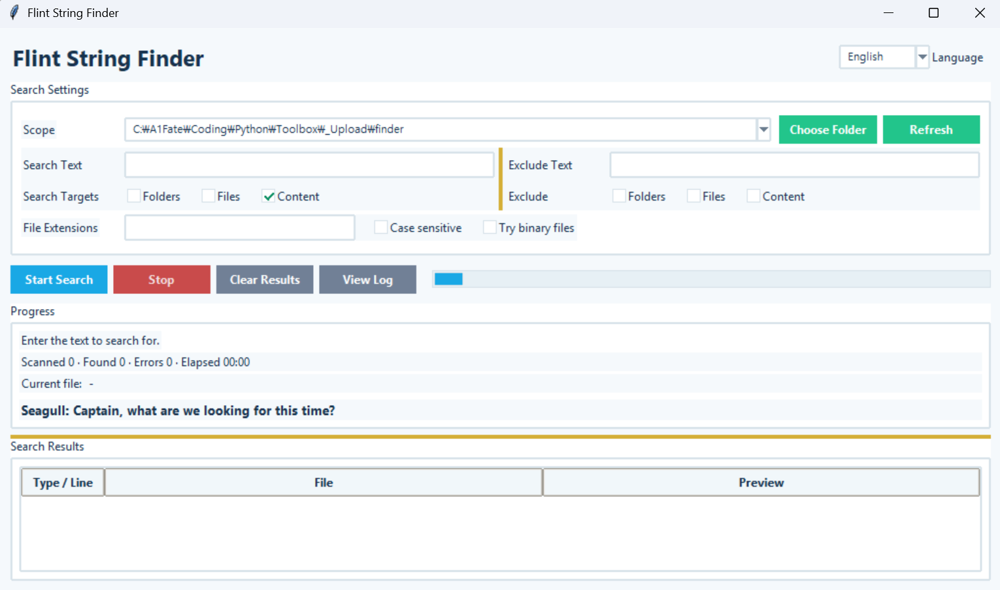

Flint String Finder
Version: 1.1.0
Flint String Finder
A Windows GUI tool for finding files containing specific text across multiple drives or folders.
How to Use
- Select the search scope (Current Folder, Entire Computer, Drive, or Folder).
- Enter the text you want to find in the
Search Textfield. - Optionally, specify file extensions (
py, md, txt, etc.) and enable case-sensitive searching. - Set exclusion rules if you want to skip certain folders, files, or files containing specific text.
- Click
Start Search. - Double-click a result to open the file directly.
- Right-click a result to open the file or its containing folder.
Search Exclusions
Exclude files and folders you don't need to search.
- Exclude folders by name
- Exclude files by name
- Exclude files containing specific text
- Skip entire directory trees under excluded folders
Error Logs
If a file cannot be accessed or read during a search, the error is recorded in a log. Use View Log to check which files caused errors and why, or to clear existing logs.
Key Features
- Uses the current working directory as the default search location
- Search your entire computer or specific drives
- Search specific folders
- Search for text within file contents
- Exclude folders, files, or files containing specific text
- Filter by file extension
- Case-sensitive search option
- Support for UTF-16 text files
- Display the current file being scanned, files scanned, matches found, and error count
- Show elapsed time and search progress
- Stop an ongoing search
- Record and review search errors
- Double-click results to open files
- Right-click results to open files or their containing folders
- Entertaining progress messages from Captain Flint and the Seagull during long searches
Run
python finder.py